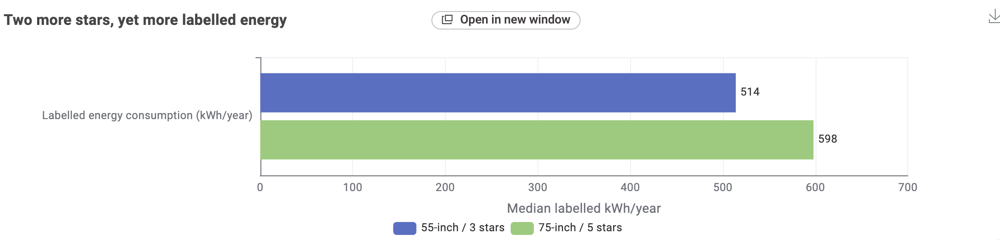
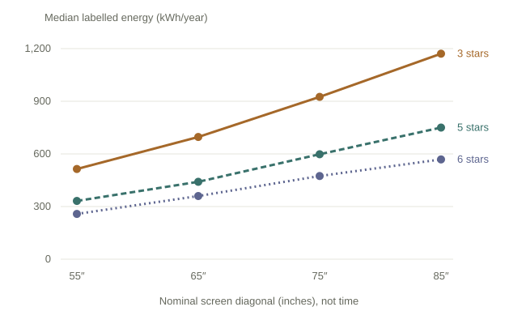
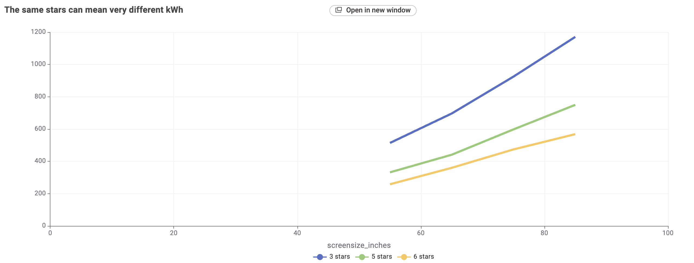
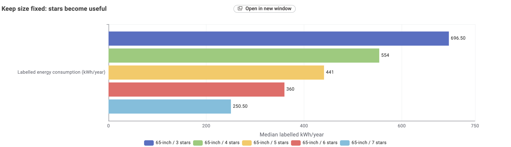

Exercise 3 · A decision for TV shoppers
More stars.
Less electricity?
Not necessarily when the screen gets bigger. Stars describe efficiency relative to screen size. If you are choosing between sizes, read the kWh/year number before assuming a higher-star TV will cost less to run.
See the evidenceTwo more stars. Still more electricity.
Chart 1 · The cross-size comparison
The two energy ranges do not overlap
Annual labelled energy. Lines show minimum-maximum; dots show medians.
Swipe across the chart to see its full scale.
This is not a selected pair of products: all 65 x 11 = 715 cross-cohort comparisons give the same direction. These repeated comparisons are not 715 independent observations, or a probability for the whole TV market.
See the original KNIME bar chart

Original view from KNIME Bar Chart · Open full-size image ↗A star rating needs a screen size
Chart 2 · Separate size from efficiency
The same stars can mean very different kWh
Median labelled energy for each size x star-rating cohort.
Swipe across the chart to see all four sizes.

Read along a line: hold stars fixed and change size. Read vertically at a size: hold size fixed and compare ratings. Lines connect four size cohorts, not years. Cohort sizes range from 5 to 96 registrations; they are not sales-weighted. Line styles and direct labels also distinguish ratings without relying on colour.
See the original KNIME line plot

Original view from KNIME Line Plot · Open full-size image ↗Keep the size. Then use the stars.
Chart 3 · All cohorts are 65″
Higher stars accompany a lower median at the same size
Median labelled energy across five 65-inch rating cohorts.
The median falls at every step from 3 to 7 stars: 696.5, 554, 441, 360 and 250.5 kWh/year. The 7-star median is about 64% lower than the 3-star median. Cohort sizes range from 6 to 96 registrations, so this describes the snapshot; it does not prove that changing a star rating causes a saving, or that the TVs match on technology, features or price.
See the original KNIME bar chart

Original view from KNIME Bar Chart · Open full-size image ↗Shop for the screen you need, not the star count alone
Take this to the store
Different sizes?
Compare kWh/year.
Similar sizes? Stars help.
Choose a screen size that meets your needs. Compare the annual labelled kWh of your shortlist, then use stars to judge efficiency among similar-size, similar-feature TVs. A higher-star larger screen is not automatically the cheaper one to run.
The 84 kWh/year difference between the two cohort medians is $25.20/year at this rate. This compares medians under label assumptions, not a promised saving between two products.
The work behind the story
How the evidence was prepared
From raw registrations to a buying comparison
The full 29-node KNIME workflow can be observed below.
See the workflow and processing checks
Scope: The 29-node workflow reads 5,340 raw rows from the 3 October 2026 dataset. The market filter
removes
308 records sold only in New Zealand, in Fiji and New Zealand, or with a blank SoldIn value,
leaving
5,032. It then keeps Available listings (4,845), Approved records (4,844) and registrations still in date on
3 October 2026 (4,842).
Quality check and counting unit: A Rule Engine flags records where Submit_ID,
Star2, screen size or annual kWh is missing, Star2 is outside 0-10, or size or kWh
is zero
or negative. Missing values are never replaced with zero, and all 4,842 records pass. A Duplicate Row Filter
keeps
the first record for each Submit_ID, giving 2,702 unique registrations. Registrations are not
sales,
households or market share.
Processing spine: After filtering and deduplication, an Expression node converts screen size to
rounded inches: round(cm x 0.393701). Two Math Formula nodes create copies of annual kWh for
minimum and maximum aggregation. From this shared spine, Rule Engine and Row Filter nodes define the
cohorts used by three separate chart branches.
Three chart branches: Chart 1 labels and keeps the 55″ / 3-star and 75″ / 5-star groups, then GroupBy calculates minimum, median, maximum and count before the Bar Chart. Chart 3 holds size at 65″, keeps the five 3- to 7-star groups, and sends their medians and counts to a second Bar Chart. Chart 2 selects four sizes by three ratings, aggregates 12 size-rating cells, pivots them into 3-, 5- and 6-star series, sorts the sizes, renames the series and finishes with a Line Plot.
Processing checks: Chart 1 contains 11 and 65 registrations; its observed ranges do not overlap because 532 is below 550 kWh/year. Chart 3 medians are 696.5, 554, 441, 360 and 250.5 kWh/year, with cohort sizes from 6 to 96. Chart 2 contains 12 cohorts across 55″, 65″, 75″ and 85″, with 3-, 5- and 6-star series. These are registration-cohort summaries, not sales totals or causal estimates.
Open the native workflow diagram ↗

Source and context
All statistics here use only the supplied tv_2026_10_03.csv. The snapshot date comes from its
filename. Star2 is the label-linked rating. The CSV describes registrations, not sales, prices or a survey
of buyers. I have not measured how often buyers misunderstand stars.
What the charts cannot promise
Registered availability does not guarantee shop stock. Features and screen technology are not matched across cohorts. Labelled annual consumption uses standard test conditions with 10 hours viewing and 14 hours standby per day; real use and bills differ. Very small groups should not be generalised.
Official context: how TV stars account for size and label usage assumptions. Verify the supplied CSV's exact download provenance and licence before publishing beyond coursework.
The chart values, without the charts
Show accessible data tables
| Chart and cohort | n | Minimum | Median | Maximum |
|---|---|---|---|---|
| Chart 1 · 55″ / 3 stars | 11 | 499 | 514 | 532 |
| Chart 1 · 75″ / 5 stars | 65 | 550 | 598 | 612 |
| Chart 3 · 65″ / 3 stars | 6 | 661 | 696.5 | 725 |
| Chart 3 · 65″ / 4 stars | 72 | 521 | 554 | 586 |
| Chart 3 · 65″ / 5 stars | 96 | 418 | 441 | 465 |
| Chart 3 · 65″ / 6 stars | 69 | 310 | 360 | 373 |
| Chart 3 · 65″ / 7 stars | 6 | 240 | 250.5 | 288 |
All energy values are labelled kWh/year. n counts registrations, not sales. 715 pair comparisons: all have a positive larger-minus-smaller difference, ranging from 18 to 113 kWh/year.
| Nominal size | 3 stars | 5 stars | 6 stars |
|---|---|---|---|
| 55″ | 514 (11) | 332 (78) | 258 (51) |
| 65″ | 696.5 (6) | 441 (96) | 360 (69) |
| 75″ | 925 (11) | 598 (65) | 474 (62) |
| 85″ | 1,171 (5) | 750 (33) | 568.5 (40) |